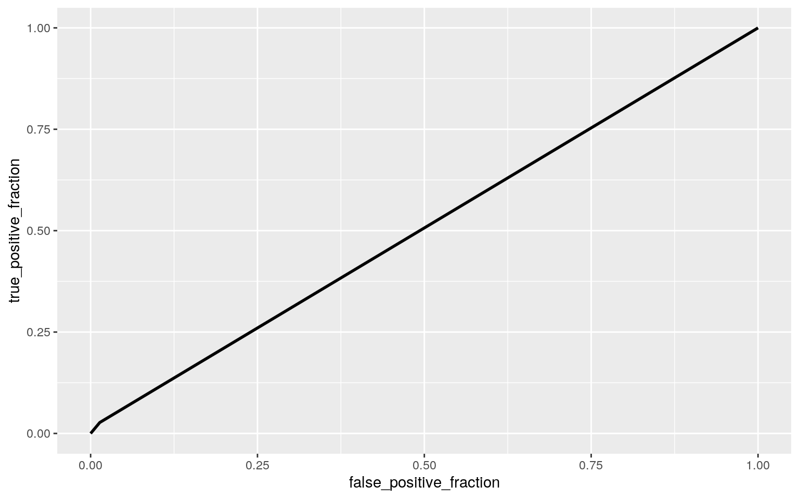

tbi_age <- readr::read_csv('https://raw.githubusercontent.com/rfordatascience/tidytuesday/master/data/2020/2020-03-24/tbi_age.csv')
glimpse(tbi_age)## Rows: 231
## Columns: 5
## $ age_group <chr> "0-17", "0-17", "0-17", "0-17",
"0-17", "0-17", "0-17", "0-4", "0-4", "0…
## $ type <chr> "Emergency Department Visit", "Emergency
Department Visit", "Emergency D…
## $ injury_mechanism <chr> "Motor Vehicle Crashes",
"Unintentional Falls", "Unintentionally struck …
## $ number_est <dbl> 47138, 397190, 229236, 55785, NA,
24360, 57983, 5464, 230776, 53436, 120…
## $ rate_est <dbl> 64.1, 539.8, 311.6, 75.8, NA, 33.1,
78.8, 27.5, 1161.0, 268.8, 60.4, NA,…tidy_age<-na.omit(tbi_age)The data set that I selected for this project contains information on traumatic brain injuries (TBI). It was originally sourced from the CDC Traumatic Brain Injury Report. The tbi_age data set contains the following variables: age_group, type, injury_mechanism, number_est, and rate_est. The age_group variable is self explanatory, it is a categorical variable that splits the patients into discrete age ranges (0-4, 0-17,15-24, etc.). The type variable is another categorical variable that contains the type of measure. In other words, where the patient ended up getting treatment/diagnosis (emergency room, hospitalization, and death). The injury_mechanism variable contatins data on the event that caused the TBI, such as motor vehicle crash, self harm, falls, and assault. The number_est variable is a numeric variable that contains the estimated number of observed cases in 2014. Finally, the rate_est variable is the estimated rate per 100,000 people in 2014. There are 5 total variables and 231 observations. I think it will be quite interesting to see which age ranges have the highest rates of TBIs, and the outcomes that different age rages see with the same types of injuries. I expect the adolescent age ranges (0-17 and 15-24) to have the highest rates of various TBIs, while expect the geriatric age ranges to have the highest incidents of death from TBIs.
library(rstatix)
ggplot(tidy_age, aes(x = number_est, y = rate_est)) + geom_point(alpha = .5) + geom_density_2d(h=2) + coord_fixed() + facet_wrap(~age_group)man1 <- manova(cbind(number_est,rate_est)~age_group, data=tidy_age)
summary(man1)## Df Pillai approx F num Df den Df Pr(>F)
## age_group 10 0.21765 2.5522 20 418 0.0002896 ***
## Residuals 209
## ---
## Signif. codes: 0 '***' 0.001 '**' 0.01 '*' 0.05 '.' 0.1
' ' 1summary.aov(man1)## Response number_est :
## Df Sum Sq Mean Sq F value Pr(>F)
## age_group 10 2.8515e+11 2.8515e+10 3.0928 0.001079 **
## Residuals 209 1.9269e+12 9.2197e+09
## ---
## Signif. codes: 0 '***' 0.001 '**' 0.01 '*' 0.05 '.' 0.1
' ' 1
##
## Response rate_est :
## Df Sum Sq Mean Sq F value Pr(>F)
## age_group 10 147870 14787 0.689 0.7342
## Residuals 209 4485587 21462tidy_age%>%group_by(age_group)%>%summarize(mean(number_est))## # A tibble: 11 x 2
## age_group `mean(number_est)`
## <chr> <dbl>
## 1 0-17 46484.
## 2 0-4 18411.
## 3 15-24 22698.
## 4 25-34 15205.
## 5 35-44 11451.
## 6 45-54 12639.
## 7 5-14 19384.
## 8 55-64 11501.
## 9 65-74 10552.
## 10 75+ 22119.
## 11 Total 137026.pairwise.t.test(tidy_age$number_est,tidy_age$age_group, p.adj="none")##
## Pairwise comparisons using t tests with pooled SD
##
## data: tidy_age$number_est and tidy_age$age_group
##
## 0-17 0-4 15-24 25-34 35-44 45-54 5-14 55-64 65-74 75+
## 0-4 0.38143 - - - - - - - - -
## 15-24 0.44144 0.88960 - - - - - - - -
## 25-34 0.31167 0.91730 0.80062 - - - - - - -
## 35-44 0.25730 0.82166 0.70466 0.89930 - - - - - -
## 45-54 0.27374 0.85172 0.73461 0.93108 0.96805 - - - - -
## 5-14 0.39812 0.97578 0.91454 0.89235 0.79725 0.82710 - -
- -
## 55-64 0.25797 0.82292 0.70591 0.90063 0.99866 0.96939
0.79850 - - -
## 65-74 0.25070 0.80133 0.68599 0.87689 0.97613 0.94460
0.77736 0.97480 - -
## 75+ 0.43566 0.90551 0.98462 0.81796 0.72249 0.75232
0.93023 0.72374 0.70363 -
## Total 0.00370 0.00016 0.00015 5.7e-05 3.4e-05 4.0e-05
0.00018 3.4e-05 3.7e-05 0.00017
##
## P value adjustment method: noneIn the above code chunk I performed a Multivariate Analysis of Variance (MANOVA) test to determine the effect of age range on the two numeric, response variables (number estimate and rate estimate). The MANOVA assumptions are very likely violated. Since the overall MANOVA was significant I performed a univariate ANOVA test and found a significant difference in number_est across different age_groups. Post hoc analysis was performed using a pairwise t-test to determine which age groups significantly differed in estimated number of TBI cases. I performed 1 MANOVA, 2 ANOVAs,and 11 t-tests. Therefore, the bonferroni adjustment for the alpha would be: .05/11 = 0.0045. The results suggest that there is only a significant difference between the total number of TBIs and each individual age group. This makes sense because the total would be significantly higher than any single age group. I attempted running the above code without the total TBI rows included and found the results to be even less significant.
tidy_age%>%group_by(type)%>%
summarize(means=mean(number_est))%>%summarize(`mean_diff`=diff(means))## # A tibble: 2 x 1
## mean_diff
## <dbl>
## 1 80054.
## 2 -73510.rand_dist<-vector()
for(i in 1:5000){
new<-data.frame(number=sample(tidy_age$number_est),type=tidy_age$type)
rand_dist[i]<-mean(new[new$type=="Deaths",]$number)-
mean(new[new$type=="Hospitalizations",]$number)
mean(new[new$type=="ER",]$number)
}
{hist(rand_dist,main="",ylab=""); abline(v = c(-73510.08, 80053.90),col="red")}mean(rand_dist>80053.9| rand_dist< -73510.08)## [1] 0ggplot(tidy_age,aes(number_est,fill=type))+geom_histogram(bins=15)+ facet_wrap(~type,ncol=2)+theme(legend.position="none")In the above code chunk I decided to perform a randomization test on the mean difference test statistic. Specifically, I decided to perform the test on the categorical variable type (death, hospitalization, and emergency room visit) and the numeric variable number_estimate. The null hypothesis is that the mean estimated number of TBIs is the same across the various outcome types. The alternative hypothesis is that the mean estimated number of TBIs is significantly different across the various outcome types.
library(lmtest)
library(sandwich)
tidy_age<-tidy_age %>% mutate(number_c=tidy_age$number_est-mean(tidy_age$number_est))
tidy_age<-tidy_age %>% mutate(rate_c=tidy_age$rate_est-mean(tidy_age$rate_est))
fit<-lm(rate_c ~number_c*age_group, data=tidy_age)
summary(fit)##
## Call:
## lm(formula = rate_c ~ number_c * age_group, data =
tidy_age)
##
## Residuals:
## Min 1Q Median 3Q Max
## -0.049739 -0.022406 0.000167 0.021497 0.057121
##
## Coefficients:
## Estimate Std. Error t value Pr(>|t|)
## (Intercept) -1.025e+01 6.841e-03 -1498 <2e-16 ***
## number_c 1.359e-03 6.734e-08 20181 <2e-16 ***
## age_group0-4 1.100e+02 9.722e-03 11314 <2e-16 ***
## age_group15-24 2.744e+01 9.349e-03 2935 <2e-16 ***
## age_group25-34 2.822e+01 1.006e-02 2804 <2e-16 ***
## age_group35-44 3.336e+01 1.127e-02 2961 <2e-16 ***
## age_group45-54 2.832e+01 1.053e-02 2689 <2e-16 ***
## age_group5-14 3.201e+01 9.781e-03 3272 <2e-16 ***
## age_group55-64 3.411e+01 1.045e-02 3264 <2e-16 ***
## age_group65-74 7.283e+01 1.053e-02 6920 <2e-16 ***
## age_group75+ 1.104e+02 9.404e-03 11736 <2e-16 ***
## age_groupTotal -3.133e+01 9.596e-03 -3265 <2e-16 ***
## number_c:age_group0-4 3.672e-03 1.440e-07 25492 <2e-16
***
## number_c:age_group15-24 9.162e-04 1.849e-07 4956 <2e-16
***
## number_c:age_group25-34 9.418e-04 2.745e-07 3430 <2e-16
***
## number_c:age_group35-44 1.114e-03 3.528e-07 3157 <2e-16
***
## number_c:age_group45-54 9.452e-04 2.967e-07 3186 <2e-16
***
## number_c:age_group5-14 1.069e-03 1.849e-07 5782 <2e-16
***
## number_c:age_group55-64 1.139e-03 2.705e-07 4209 <2e-16
***
## number_c:age_group65-74 2.431e-03 2.560e-07 9498 <2e-16
***
## number_c:age_group75+ 3.684e-03 1.225e-07 30082 <2e-16
***
## number_c:age_groupTotal -1.045e-03 7.127e-08 -14666
<2e-16 ***
## ---
## Signif. codes: 0 '***' 0.001 '**' 0.01 '*' 0.05 '.' 0.1
' ' 1
##
## Residual standard error: 0.02864 on 198 degrees of
freedom
## Multiple R-squared: 1, Adjusted R-squared: 1
## F-statistic: 2.691e+08 on 21 and 198 DF, p-value: <
2.2e-16coeftest(fit, vcov=vcovHC(fit))#[,1:2]##
## t test of coefficients:
##
## Estimate Std. Error t value Pr(>|t|)
## (Intercept) -1.0247e+01 6.6706e-03 -1536.1 < 2.2e-16 ***
## number_c 1.3591e-03 1.6887e-07 8048.0 < 2.2e-16 ***
## age_group0-4 1.0999e+02 1.2753e-02 8625.2 < 2.2e-16 ***
## age_group15-24 2.7442e+01 9.4386e-03 2907.4 < 2.2e-16
***
## age_group25-34 2.8215e+01 1.5385e-02 1833.9 < 2.2e-16
***
## age_group35-44 3.3361e+01 9.8522e-03 3386.1 < 2.2e-16
***
## age_group45-54 2.8316e+01 8.5619e-03 3307.2 < 2.2e-16
***
## age_group5-14 3.2008e+01 9.6521e-03 3316.2 < 2.2e-16 ***
## age_group55-64 3.4110e+01 1.5153e-02 2251.0 < 2.2e-16
***
## age_group65-74 7.2829e+01 3.6119e-02 2016.3 < 2.2e-16
***
## age_group75+ 1.1037e+02 1.4051e-02 7854.7 < 2.2e-16 ***
## age_groupTotal -3.1332e+01 9.5492e-03 -3281.1 < 2.2e-16
***
## number_c:age_group0-4 3.6718e-03 3.8921e-07 9434.1 <
2.2e-16 ***
## number_c:age_group15-24 9.1619e-04 2.4065e-07 3807.2 <
2.2e-16 ***
## number_c:age_group25-34 9.4180e-04 5.5080e-07 1709.9 <
2.2e-16 ***
## number_c:age_group35-44 1.1138e-03 3.2812e-07 3394.4 <
2.2e-16 ***
## number_c:age_group45-54 9.4517e-04 2.3018e-07 4106.2 <
2.2e-16 ***
## number_c:age_group5-14 1.0689e-03 2.4018e-07 4450.2 <
2.2e-16 ***
## number_c:age_group55-64 1.1386e-03 5.6235e-07 2024.7 <
2.2e-16 ***
## number_c:age_group65-74 2.4314e-03 1.3867e-06 1753.4 <
2.2e-16 ***
## number_c:age_group75+ 3.6841e-03 4.7533e-07 7750.5 <
2.2e-16 ***
## number_c:age_groupTotal -1.0452e-03 1.7637e-07 -5926.0 <
2.2e-16 ***
## ---
## Signif. codes: 0 '***' 0.001 '**' 0.01 '*' 0.05 '.' 0.1
' ' 1ggplot(tidy_age, aes(y=number_est,x=rate_est, color = age_group)) +
geom_smooth(method = "lm", se = F, fullrange = T,aes(color=age_group))+ geom_point()+geom_vline(xintercept=0,lty=2)+geom_vline(xintercept=mean(tidy_age$number_est))resids<-fit$residuals; fitvals<-fit$fitted.values
ggplot()+geom_point(aes(fitvals,resids))+geom_hline(yintercept=0, col="red")ggplot()+geom_histogram(aes(resids), bins=20)ggplot()+geom_qq(aes(sample=resids))+geom_qq_line(aes(sample=resids))I mean centered the numeric variables number_est and rate_est. Then I built a linear regression predicting the estimated rate of TBIs per 100,000 individuals (rate_est) from the interaction of the number_est and age_group variables. The intercept coefficient tells us that the predicted rate of TBIs is less than 0 (-10.25) when the other predictors are set to 0. The 0-4 and 75+ age groups have the largest, positive coefficient estimates (109.99 and 110.37), which means that they have an increased rate of TBIs compared to the reference group (0-17 year-olds). The coefficient estimates that include the interaction of estimated number of TBIs and age groups are significantly lower than the estimates without interaction. I graphically checked the assumptions of linearity, normality, and homoskedasticity. To my understanding it seems to fail all of these assumptions. This model gave us an R-squared value of 1, which means that 100% of variability in the estimated rate of TBIs per 100,000 people is explained by this model. After computing the regression results using robust SEs I do not see any significant changes in results.
samp_distn<-replicate(5000, {
boot_dat<-boot_dat<-tidy_age[sample(nrow(tidy_age),replace=TRUE),]
fit<-lm(rate_c~number_c*age_group, data=tidy_age)
coef(fit)
})
samp_distn%>%t%>%as.data.frame%>%summarize_all(sd)## (Intercept) number_c age_group0-4 age_group15-24
age_group25-34 age_group35-44 age_group45-54
## 1 0 0 0 0 0 0 0
## age_group5-14 age_group55-64 age_group65-74 age_group75+
age_groupTotal number_c:age_group0-4
## 1 0 0 0 0 0 0
## number_c:age_group15-24 number_c:age_group25-34
number_c:age_group35-44 number_c:age_group45-54
## 1 0 0 0 0
## number_c:age_group5-14 number_c:age_group55-64
number_c:age_group65-74 number_c:age_group75+
## 1 0 0 0 0
## number_c:age_groupTotal
## 1 0samp_distn%>%t%>%as.data.frame%>%gather%>%group_by(key)%>% summarize(lower=quantile(value,.025), upper=quantile(value,.975))## # A tibble: 22 x 3
## key lower upper
## <chr> <dbl> <dbl>
## 1 (Intercept) -10.2 -10.2
## 2 age_group0-4 110. 110.
## 3 age_group15-24 27.4 27.4
## 4 age_group25-34 28.2 28.2
## 5 age_group35-44 33.4 33.4
## 6 age_group45-54 28.3 28.3
## 7 age_group5-14 32.0 32.0
## 8 age_group55-64 34.1 34.1
## 9 age_group65-74 72.8 72.8
## 10 age_group75+ 110. 110.
## # … with 12 more rowsfit<-lm(rate_c~number_c*age_group, data=tidy_age)
resids<-fit$residuals
fitted<-fit$fitted.values
resid_resamp<-replicate(5000,{
new_resids<-sample(resids,replace=TRUE)
newdat<-tidy_age
newdat$new_y <- fitted+new_resids
fit<-lm(new_y ~ number_c*age_group, data=newdat)
coef(fit)
})
resid_resamp%>%t%>%as.data.frame%>%summarize_all(sd)## (Intercept) number_c age_group0-4 age_group15-24
age_group25-34 age_group35-44 age_group45-54
## 1 0.006488618 6.373023e-08 0.009140464 0.008944983
0.00952369 0.01071302 0.009998237
## age_group5-14 age_group55-64 age_group65-74 age_group75+
age_groupTotal number_c:age_group0-4
## 1 0.009170399 0.009892548 0.01007739 0.008928722
0.009223914 1.389783e-07
## number_c:age_group15-24 number_c:age_group25-34
number_c:age_group35-44 number_c:age_group45-54
## 1 1.737771e-07 2.640125e-07 3.346686e-07 2.845646e-07
## number_c:age_group5-14 number_c:age_group55-64
number_c:age_group65-74 number_c:age_group75+
## 1 1.767138e-07 2.575491e-07 2.421483e-07 1.158919e-07
## number_c:age_groupTotal
## 1 6.720451e-08resid_resamp%>%t%>%as.data.frame%>%gather%>%group_by(key)%>% summarize(lower=quantile(value,.025), upper=quantile(value,.975))## # A tibble: 22 x 3
## key lower upper
## <chr> <dbl> <dbl>
## 1 (Intercept) -10.3 -10.2
## 2 age_group0-4 110. 110.
## 3 age_group15-24 27.4 27.5
## 4 age_group25-34 28.2 28.2
## 5 age_group35-44 33.3 33.4
## 6 age_group45-54 28.3 28.3
## 7 age_group5-14 32.0 32.0
## 8 age_group55-64 34.1 34.1
## 9 age_group65-74 72.8 72.8
## 10 age_group75+ 110. 110.
## # … with 12 more rowsIn the code chunk above I reran the previously built linear regression, but this time with bootstrapped standard errors. Initially I decided to just re-sample the observations, but that resulted in estimated standard errors of 0 across the board. I am still not sure how to interpret this but I figured I would leave it in because it is interesting. Since re-sampling the observations did not work I decided to re-sample the residuals. This generated better results.
data<-tidy_age%>%mutate(y=ifelse(type=="Deaths",1,0))
fit<-glm(y~age_group+injury_mechanism, data=data, family="binomial")
exp(coef(fit))%>%round(3)## (Intercept)
## 0.500
## age_group0-4
## 1.000
## age_group15-24
## 0.980
## age_group25-34
## 0.980
## age_group35-44
## 0.980
## age_group45-54
## 0.980
## age_group5-14
## 1.000
## age_group55-64
## 0.980
## age_group65-74
## 1.062
## age_group75+
## 1.062
## age_groupTotal
## 0.980
## injury_mechanismIntentional self-harm
## 1.149
## injury_mechanismMotor Vehicle Crashes
## 1.000
## injury_mechanismOther or no mechanism specified
## 1.000
## injury_mechanismOther unintentional injury, mechanism
unspecified
## 1.000
## injury_mechanismUnintentional Falls
## 1.000
## injury_mechanismUnintentionally struck by or against an
object
## 1.000prob<-predict(fit, type="response")
class_diag(prob, data$y)## acc sens spec ppv auc
## 1 0.6636364 0 1 NaN 0.5066642data$logit<-predict(fit,type="link")
data%>%ggplot()+geom_density(aes(logit,color=type,fill=type), alpha=.4)+
theme(legend.position=c(.85,.85))+geom_vline(xintercept=0)+xlab("predictor (logit)")library(plotROC)
ROCplot<-ggplot(data)+geom_roc(aes(d=y,m=prob), n.cuts=0)
ROCplot
calc_auc(ROCplot)## PANEL group AUC
## 1 1 -1 0.5066642table(predict=as.numeric(prob>.5),truth=data$y)%>%addmargins## truth
## predict 0 1 Sum
## 0 146 74 220
## Sum 146 74 220I decided to turn the type variable into a binary variable. The binary variable describes weather a TBI resulted in a death (1) or not (0). The predictor variables I used are age_group and injury_mechanism. I am curious to see if their mechanism of injury and age groups can predict if a TBI results in death of the individual. The accuracy, sensitivity, specificity, and AUC are: 0.664, 0, 1, and 0.51, respectively. This means that the model correctly classified 66.4% of the cases (accuracy). The specificity of 1 means that the model correctly classified 100% of all of the non-death causing TBIs. A sensitivity of 0 means that the model had a 0% true positive rate. An AUC of 0.51 is not very impressive. Our model is performing pretty poorly.
data2<-data %>% select(-2,-4,-5,-9)
fit2<-glm(y~. , data=data2,family="binomial")
prob2<-predict(fit2, type="response")
table(predict=as.numeric(prob2>.99))%>%addmargins## predict
## 0 Sum
## 220 220class_diag(prob2, data2$y)## acc sens spec ppv auc
## 1 0.8590909 0.7702703 0.9041096 0.8028169 0.9082747k=10
data3<-data2[sample(nrow(data2)),] #put dataset in random order
folds<-cut(seq(1:nrow(data2)),breaks=k,labels=F) #create folds
diags<-NULL
for(i in 1:k){ # FOR EACH OF 10 FOLDS
train<-data3[folds!=i,] # CREATE TRAINING SET
test<-data3[folds==i,] # CREATE TESTING SET
truth<-test$y
fit<- glm(y~., data=train, family="binomial")
probs<- predict(fit, newdata=test, type="response")
diags<-rbind(diags,class_diag(probs,truth)) #CV DIAGNOSTICS FOR EACH FOLD
}
summarize_all(diags,mean) #AVERAGE THE DIAGNOSTICS ACROSS THE 10 FOLDS## acc sens spec ppv auc
## 1 0.7545455 0.6076984 0.8240638 0.6195238 0.8270634library(glmnet)
x<-model.matrix(y~ ., data=data2)
y<-as.matrix(data2$y)
cv<-cv.glmnet(x,y,family="binomial")
lasso<-glmnet(x,y,family="binomial",lambda=cv$lambda.1se)
coef(lasso)## 20 x 1 sparse Matrix of class "dgCMatrix"
## s0
## (Intercept) -1.490444e+00
## (Intercept) .
## age_group0-4 .
## age_group15-24 .
## age_group25-34 .
## age_group35-44 .
## age_group45-54 .
## age_group5-14 .
## age_group55-64 .
## age_group65-74 .
## age_group75+ .
## age_groupTotal .
## injury_mechanismIntentional self-harm -9.517801e-02
## injury_mechanismMotor Vehicle Crashes .
## injury_mechanismOther or no mechanism specified .
## injury_mechanismOther unintentional injury, mechanism
unspecified .
## injury_mechanismUnintentional Falls 4.400659e-01
## injury_mechanismUnintentionally struck by or against an
object .
## number_c -7.450685e-07
## rate_c -2.519618e-02lasso_dat <- data2 %>% mutate(Fall= ifelse(injury_mechanism=="Unintentional Falls", 1, 0))%>%
select(number_c,rate_c,Fall,y)
lass<-lasso_dat[sample(nrow(lasso_dat)),] #put dataset in random order
folds<-cut(seq(1:nrow(lasso_dat)),breaks=k,labels=F) #create folds
diags<-NULL
for(i in 1:k){ # FOR EACH OF 10 FOLDS
train<-lass[folds!=i,] # CREATE TRAINING SET
test<-lass[folds==i,] # CREATE TESTING SET
truth<-test$y
fit<- glm(y~., data=train, family="binomial")
probs<- predict(fit, newdata=test, type="response")
diags<-rbind(diags,class_diag(probs,truth)) #CV DIAGNOSTICS FOR EACH FOLD
}
summarize_all(diags,mean)## acc sens spec ppv auc
## 1 0.7545455 0.765873 0.7776076 0.6407792 0.8710365I created a data-set containing only the variables of interest for this logistic regression. I took out the logit, probabilities, and the non-centered numeric variables. The AUC for this model (0.908) is quite a bit higher than the AUC of the last one. Actually, all of the in-sample classification diagnostics increased! This model is predicting better than the last one. Next, I performed a 10-fold CV with the same model to see what the out of sample classification diagnostics looked like. There were decreases in each of the classification diagnostics. The AUC went down from 0.908 to 0.849, so we are seeing some over-fitting. Thus, the model is performing slightly worse out of sample. Next, I performed LASSO on the same set of variables and it selected the unintentional falls injury mechanism and our two numeric variables (centered rate and number estimate). After performing the LASSO regularization and the subsequent 10-fold CV, the model slightly improved. The AUC and other out-of-sample classification diagnostics increased.